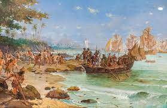
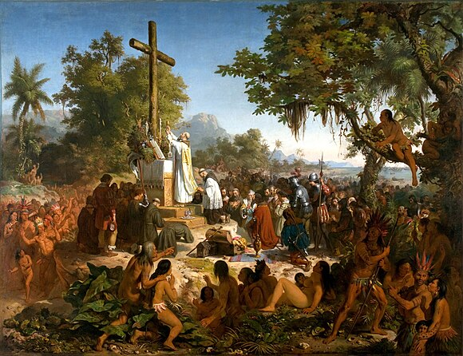

ESCUTE ESSA MÚSICA DE PRODUÇÃO INDÍGENA:
CONTEXTUALIZAÇÃO DA HISTÓRIA INDÍGENA BRASILEIRA
SUMÁRIO:
INDÍGENAS BRASILEIROS ANTES DE 1500
Ao chegarem ao Brasil, os portugueses encontraram um território povoado. Seus habitantes, porém, desconheciam a escrita e não deixaram documentos sobre o próprio passado. O conhecimento que temos sobre os índios brasileiros do século 16 baseia-se principalmente em relatos e descrições dos viajantes europeus que aqui estiveram, na época.
INDÍGENAS BRASILEIROS DEPOIS DE 1500
Com a chegada da primeira leva de europeus, logo no primeiro século, a população indígena foi reduzida a quatro milhões, com as doenças e o extermínio. Atualmente, no Brasil, são cerca de 450 mil indígenas distribuídos por todo o território brasileiro. Ou seja, de cinco milhões, no século 16, temos hoje apenas 450 mil pessoas indígenas, conforme a Funai.